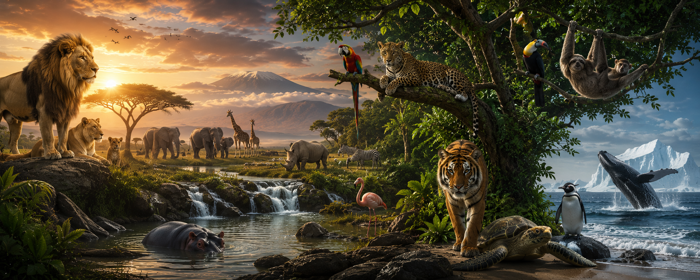

Explora el increíble mundo animal y descubre datos sorprendentes.
Las jirafas solo duermen entre 20 minutos y 2 horas al día.
Los pulpos tienen tres corazones y sangre de color azul.
Los elefantes pueden recordar lugares y otros elefantes durante muchos años.
Son los únicos mamíferos capaces de volar de forma sostenida.